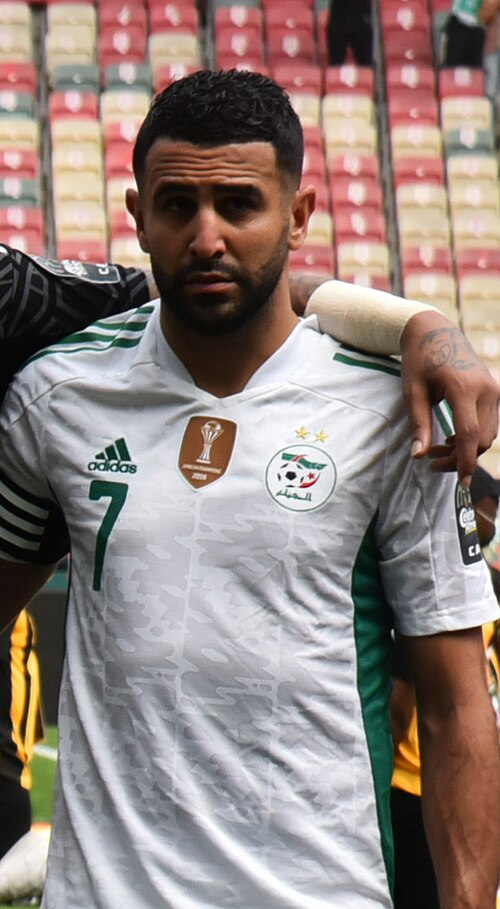

Al Ahli FC Portfolio
Current roster, squad value, top assets, U23 assets, honours, and market risk.
Al Ahli FC
Saudi Arabia | Saudi Pro League | Asia | AFC
Roster source: Al Ahli FC | Checked 2026-05-24
Market Score vs Age
Squad portfolio shape by age and market score.
How to read: Each point shows how squad age relates to market value.
Position Strength
GK, CB, FB, CM, W, CF portfolio balance.
How to read: Bars compare strength across the main football position groups.
Squad Age Curve
Age distribution across current senior, prime, and veteran player groups.
How to read: Use this chart to spot youth pipeline, prime core, and veteran risk.
U23 Pipeline
Young player supply by market score, role security, and squad confidence.
How to read: Higher bars indicate stronger young-player depth inside the current squad.
Current Player Roster
| Player | Age | Position | ARES Score | Market Score | Tier | Trend | Profile |
|---|---|---|---|---|---|---|---|
| ADFAl Ahli FCAl-Raed | 26 | DF | 84.7 | 89.0 | Core Starter | Rising | Open profile |
 Franck Kessié Franck Kessié | 29 | MF | 87.5 | 85.2 | Blue-Chip Asset | Falling | Open profile |
| VAMFAl Ahli FCValentin Atangana | 31 | MF | 82.9 | 84.5 | Core Starter | Stable | Open profile |
| GFWAl Ahli FCGaleno | 25 | FW | 79.4 | 83.9 | Core Starter | Stable | Open profile |
| RIDFAl Ahli FCRoger Ibañez | 22 | DF | 71.0 | 82.9 | Rising Asset | Rising | Open profile |
| Ivan Toney | 30 | FW | 83.1 | 82.2 | Blue-Chip Asset | Falling | Open profile |
 Riyad Mahrez | 35 | W | 83.4 | 79.0 | Rising Asset | Rising | Open profile |
| AAGKAl Ahli FCAbdulrahman Al-Sanbi | 33 | GK | 88.6 | 78.2 | Core Starter | Stable | Open profile |
 Enzo Millot Enzo Millot | 23 | MF | 79.2 | 77.1 | Rising Asset | Rising | Open profile |
| FAFWAl Ahli FCFiras Al-Buraikan | 19 | FW | 81.1 | 73.7 | Rising Asset | Rising | Open profile |
| EAMFAl Ahli FCEid Al-Muwallad | 32 | MF | 84.9 | 70.3 | Core Starter | Rising | Open profile |
| MMFAl Ahli FCMatee | 27 | MF | 66.5 | 68.0 | Core Starter | Stable | Open profile |
| MSDFAl Ahli FCMohammed Sulaiman | 30 | DF | 74.2 | 67.8 | Core Starter | Stable | Open profile |
U23 Assets
| Player | Age | Position | Market | Reason |
|---|---|---|---|---|
| RIDFAl Ahli FCRoger Ibañez | 22 | DF | 82.9 | Current club roster row parsed from Wikipedia. |
| Enzo Millot | 23 | MF | 77.1 | Upside MF profile with Saudi Pro League context, 1671 beta-estimated minutes, and licensed Commons photo coverage. |
| FAFWAl Ahli FCFiras Al-Buraikan | 19 | FW | 73.7 | Current club roster row parsed from Wikipedia. |
Club Honours And Trophies
| Competition | Type | Count | Years | Source |
|---|---|---|---|---|
| Type Competition Titles Seasons / Notes | Team honour | 1 | https://en.wikipedia.org/wiki/Al-Ahli_Saudi_FC | |
| Domestic Saudi Pro League 9 1962 | Team honour | 9 | 1962, 1965, 1968, 1970, 1971, 1972, 1977, 1983 | https://en.wikipedia.org/wiki/Al-Ahli_Saudi_FC |
| Saudi First Division League 1 2022 | Team honour | 1 | 2022 | https://en.wikipedia.org/wiki/Al-Ahli_Saudi_FC |
| King's Cup 8 1969, 1977 , 1978 , 1979 , 1983 , 2011 , 2012 , 2016 | Team honour | 8 | 1969, 1977, 1978, 1979, 1983, 2011, 2012, 2016 | https://en.wikipedia.org/wiki/Al-Ahli_Saudi_FC |
| Saudi Super Cup 2 2016 , 2025 | Team honour | 2 | 2016, 2025 | https://en.wikipedia.org/wiki/Al-Ahli_Saudi_FC |
| Crown Prince's Cup 6 1957, 1970, 1998, 2002, 2006 | Team honour | 6 | 1957, 1970, 1998, 2002, 2006, 2014 | https://en.wikipedia.org/wiki/Al-Ahli_Saudi_FC |
| Saudi Federation Cup 3 2001, 2002, 2007 | Team honour | 3 | 2001, 2002, 2007 | https://en.wikipedia.org/wiki/Al-Ahli_Saudi_FC |
| Continental AFC Champions League Elite 2 2024 | Team honour | 2 | 2024, 2025 | https://en.wikipedia.org/wiki/Al-Ahli_Saudi_FC |
| Regional Arab Champions League 1 2002 | Team honour | 1 | 2002 | https://en.wikipedia.org/wiki/Al-Ahli_Saudi_FC |
| Gulf Club Champions Cup 3 s 1985, 2002 , 2008 | Team honour | 3 | 1985, 2002, 2008 | https://en.wikipedia.org/wiki/Al-Ahli_Saudi_FC |
| International Friendship Football Tournament 2 2001, 2002 | Team honour | 2 | 2001, 2002 | https://en.wikipedia.org/wiki/Al-Ahli_Saudi_FC |
| record | Team honour | 1 | https://en.wikipedia.org/wiki/Al-Ahli_Saudi_FC | |
| s shared record | Team honour | 1 | https://en.wikipedia.org/wiki/Al-Ahli_Saudi_FC |
Transfer Needs
| Need | Position | Reason | Priority | Suggested Profile |
|---|---|---|---|---|
| Role security and U23 depth | Depth risk review | Squad portfolio balance uses ARES score, market score, age curve, and roster coverage. | Medium | Current roster players sorted by Market Score |
Source And Rights Note
Seeded beta data. Live feeds are not connected. Current roster and honours rows are sourced from Wikipedia where structured enough. Club images use safe non-logo Wikimedia Commons media only when a creator, license, source URL, checked date, and rights status are stored in the image registry; otherwise ARES shows a fallback visual.